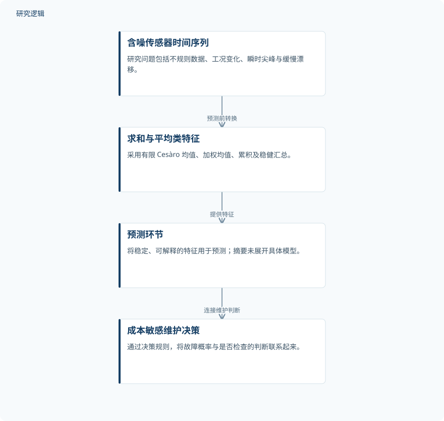

摘要解读
求和法辅助的工业设备预测性维护机器学习框架
A Summability Assisted Machine Learning Framework for Predictive Maintenance of Industrial Equipment
解读更新 2026-11-09 13:04 · 依据公开摘要整理，未核验全文细节
工业预测性维护既要避免被瞬时尖峰触发误报，也要及时识别缓慢退化。这项研究尝试在预测前，用求和性方法把嘈杂时序转成稳定、可解释的特征，并将预测与维护决策联系起来；但目前证据仅来自合成数据。
文章目录
瞬时尖峰与缓慢漂移，提出不同的识别要求
工业传感器数据往往存在噪声、采样不规则和运行工况变化。机器学习模型可能对短暂尖峰反应过度，也可能漏掉逐渐累积的漂移。因此，研究关注的不只是预测本身，还包括如何在预测前整理信号，使特征更稳定、更容易解释。
从求和性特征连接到维护决策
研究采用方法论设计，结合文献综合，给出有限 Cesàro 均值、加权均值、累积与稳健汇总的数学定义，构建求和性辅助机器学习框架。其基本思路是先将含噪时序转换为特征，再用于预测，而不是只依赖原始信号。
框架还纳入防范数据泄漏的评估协议和成本敏感决策规则，并以合成泵记录进行仿真说明。摘要将平滑处理、预测评估与维护行动联系起来，但未展开具体模型、数据划分及概率校准的实现细节。
依据摘要整理的求和性辅助预测流程


仅概括摘要明确描述的信号处理、预测与决策关系，不代表论文原图或已获实证验证的部署流程。
下载 SVG图示关系说明
实线表示相邻阶段的信息流，虚线表示跨阶段联系或反馈。
含噪传感器时序 → 求和性特征：预测前转换；求和性特征 → 机器学习预测：提供预测特征；机器学习预测 → 成本敏感维护决策：结合成本规则
合成记录展示了漂移识别与告警权衡
在合成记录中，相邻窗口差与截断累积和检测到了单样本限值方法遗漏的缓慢漂移，同时没有对孤立尖峰作出响应。摘要还报告，窗口长度影响误报与检测延迟之间的权衡；这并不意味着平滑越强，维护判断就一定越好。
决策算例显示，当收支平衡概率为 0.048 时，校准后的故障概率 0.18 足以支持检查决策。这是特定算例中的成本敏感判断，不宜直接当作其他设备的通用检查阈值，也不是实际部署收益的验证。
尚未跨过真实设备的实证验证边界
摘要明确说明，框架尚未经过实证验证，全部数值结果均来自合成数据。仅凭摘要无法判断合成记录的样本规模、比较方法的覆盖范围，以及不同工况和设备上的验证表现；这些信息未在摘要报告，不等于论文没有讨论。
研究提供了以 Intelligent Maintenance Systems（IMS）轴承试验为基础的真实数据参照，供后续实证工作使用，不能据此认定已完成真实轴承验证。作者也强调，求和性特征的价值仍须针对各类资产和决策时间范围分别证明。
阅读启发：关注平滑如何改变维护判断
阅读启发：这项工作的可取之处，是把信号平滑与维护决策放在同一评估框架中。进一步阅读时，可重点关注窗口选择如何处理误报与延迟的取舍、防泄漏协议如何落实，以及检查阈值依赖哪些成本条件，而不宜仅凭合成示例推断现场有效性。
以上为本站阅读启发与建议，不是论文已验证的结论。